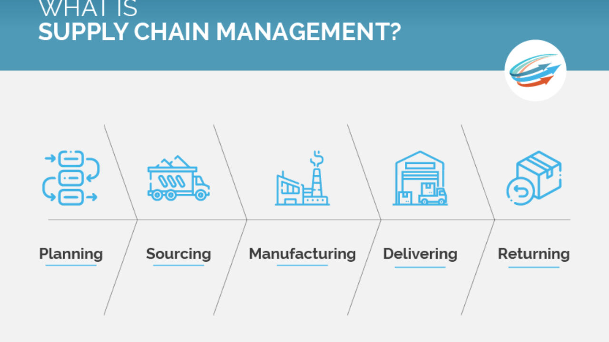

Projected Career Path
I want to build a career in operations and strategic sourcing, especially in roles that connect supplier decisions, risk management, and long-term business value. I am interested in work that helps organizations become more resilient without losing sight of people, ethics, and execution.
Experience in the Field
My background includes analytics, IT leadership, ERP implementation, and supply chain problem-solving. At Honeywell, I worked on risk analysis and visibility for major revenue components. At Nidec, I worked on operations data, inventory decisions, budgets, projects, and systems.
How I Hope to Contribute
I hope to help companies make wiser sourcing and operations decisions, especially when there is uncertainty. I want to contribute through structured thinking, good collaboration, and a focus on solutions that improve both performance and resilience.
Why This Field Matters to Me
Operations and supply chain work shape whether organizations can actually deliver on their promises. I like this field because it is practical, cross-functional, and highly consequential. Good decisions here affect customers, employees, suppliers, and long-term strategy.
I am especially interested in how data can support better operational decisions and how leaders can build systems that are both efficient and adaptable.
